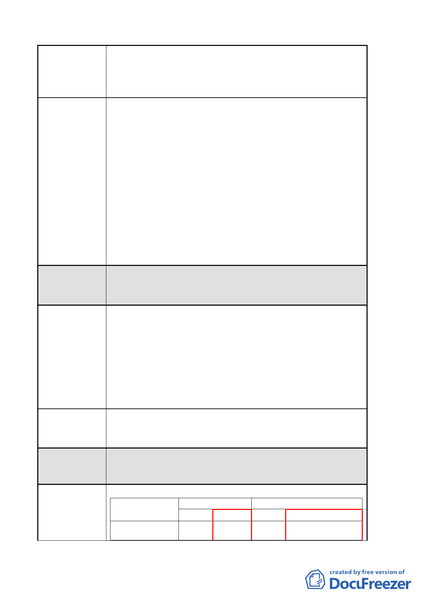

案名
建議辦法二
委員會決議
陳情理由三
建議辦法三
委員會決議
變更臺北市中山區長春段二小段 125-1 地號等 47 筆土地第
三種住宅區為第三種住宅區（特）、第三之二種住宅區為第
三之二種住宅區（特）及修訂第三種商業區（特）土地使
用管制細部計畫案
建議本案開發期程中「申請建築執照、開工」依原公告內
容辦理。
1.申請建築執照
申請人應於開發案經本市都市設計及土地使用
開發許可審議委員會審議通過，並經本府核備後，於收到
核備函之日起 1 年內申請建築執照。但申請提案併同辦理
都市更新者，不受此限。另倘已申請建築執照，但擬申請
本案者，依原本申請建築執照程序續辦，但須辦理都市設
計變更設計審議程序，並申換建築執照資料，惟法令適用
應以申請本開發計畫案都市設計審議之送件日期檢討。
2.開工
申請人應自領得建築執照之日起，應於 6 個月內開
工。但申請提案併同辦理都市更新者，不受此限。
有關本案開發期程之管制，依市府代表表示參酌公民或團
體陳情意見，同意刪除「99 年 3 月 31 日前取得建築執照」
之規定。
現有巷道廢止或改道：基地內有現有巷道（建國北路二段
75 巷），本案載明擬依《臺北市現
有巷道廢止或改道申請辦法》第 10
條規定辦理。
說明：該巷道符合《臺北市都市更新自治條例》第 10 條規
定，得於事業計畫審議通過後予以廢止或改道。倘依
該《臺北市現有巷道廢止或改道申請辦法》辦理時間
較長，恐不符本政策之目標。
建議「拾壹、其他之第二點」修正為「二、本更新單元內
尚有建國北路二段 75 巷…，擬依臺北市都市更新自治條例
第 10 條規定，於事業計畫審議通過後予以廢止。
有關現有巷道廢止或改道事宜，逕依都市更新相關法令規
定辦理，不另行規定。
陳情理由四
四、變更前後土地使用強度表：
土地使用分區
變更前
變更後
建蔽率(%) 容積率(%) 建蔽率(%)
容積率(%)
第3種住宅區(特) 45 225 45 225+臺北好好看之獎勵
容積
-9-